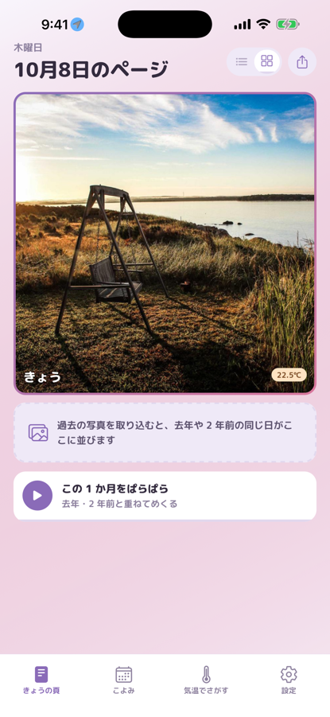
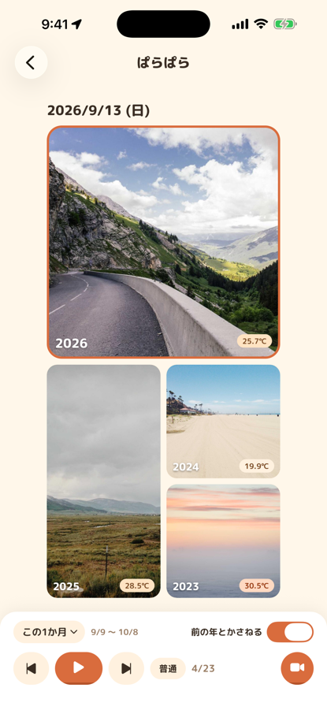
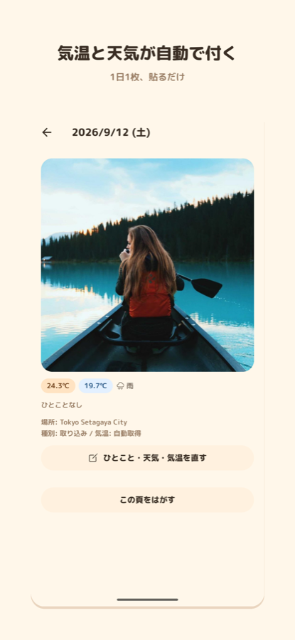
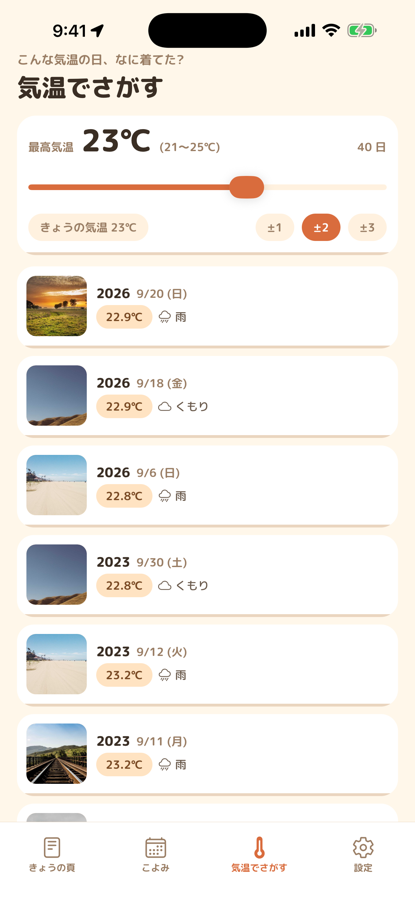
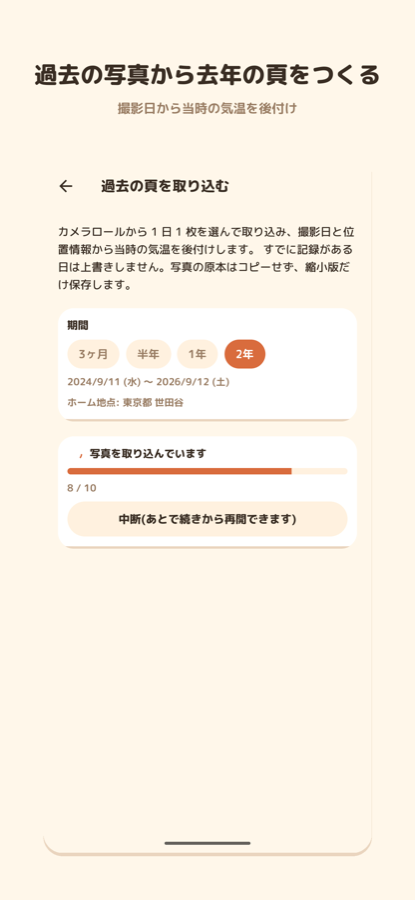

かさね日記
この気温の日、なに着てた?
1 日 1 枚の写真に、その日の気温と天気が自動で付く 3 年日記。去年・2 年前の同じ日と重ねて見られて、気温で過去の写真をさがせます。
無料(一部の機能は買い切りの Pro)。Android 版は近日公開





できること
気温でさがす
今日と同じくらいの気温だった日の写真を、これまでの記録から並べて見られます。毎朝の服選びや衣替えの目安に。
去年の今日と重ねて見る
きょう・先週・先月・去年・2 年前の同じ日が一枚の頁に。その日に写真が無ければ、前後 3 日でいちばん近い日を出します。
貼るだけで気温と天気が付く
きょうの 1 枚を撮るか選ぶだけ。場所・気温・天気は自動で付きます。
過去の写真から始められる
カメラロールの過去の写真をまとめて取り込み、当時の気温を後から付けます(無料で 2 年分)。始めた日から 3 年日記になります。
写真は端末の中だけ
アカウント登録は不要。写真と記録は端末内にだけ保存され、外部のサーバーには送られません。
こんな方に
- 子どもの服装で毎朝迷う方、成長の記録も残したい方
- 家庭菜園やガーデニングで、季節ごとの育ち方を比べたい方
- 自分のコーデ記録・服装記録を気温と一緒に残したい方
- 日記は続かないけれど、写真 1 枚なら続けられそうな方
よくある質問
- 写真はどこに保存されますか?
- すべて端末の中だけに保存されます。外部のサーバーには送られません。アプリを削除すると写真と記録も消えます。
- 気温はどこから取っていますか?
- Open-Meteo の天気データを使っています。位置は約 10km の精度に丸めてから問い合わせます。
- 過去の写真の気温が付きません
- 写真に位置情報がない場合、推測で気温を付けることはしません。頁の詳細で場所(ホーム地点か地名)を選ぶと、その日の気温が付きます。
- 昔の写真が取り込めません
- 機種変更などで、昔の写真が端末になく Google フォトなどのクラウドにしか無いことがあります。先に Google フォトや Amazon Photos のアプリで端末にダウンロードしてから取り込んでください。撮影日と位置はダウンロードしても残ります。
- 去年の同じ日に写真がありません
- 前後 3 日以内でいちばん近い日の写真を「2 日前」のように表示します。それも無い場合は空の頁になります。
- データを全部消したい
- 設定の「すべて削除」か、アプリの削除で消えます。
お問い合わせ
不具合や要望は、メールでお知らせください。返信には数日いただくことがあります。